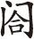

【桃源忆故人】 （旦引老旦上） 卢郎未老因缘大，赘居崔氏清河 [1] 。夫贵妻荣堪贺，忽地把人分破。（合） 问天天方便些儿个，归到画堂清妥 [2] 。
［长相思］博陵崔，清河崔，昔日崔徽今又徽 [3] ，今生情为谁？去关西，渡河西。你南望相思，我向北相思，丁东风马儿 [4] 。姥姥，一从卢郎征西，杳无信息。不知彼中征战若何？（老）仗皇家福力，必然取胜，则是姐姐消瘦了几分。
【掷破金字令】 （旦） 不茶不饭，所事慵妆里。（老）他是为官。（旦） 为 官身跋涉，把令政成抛躲 [5] 。（老） 远路风尘，知他是 怎么？（旦） 则为他 人才得过，聪明又颇好功名两字生折磨。（合） 春光去了呵，秋光即渐多。扇掩轻罗，泪点层波，则为他 着人儿那些 情意可。
【夜雨打梧桐】 （旦） 拈整翠钿窝，闷把镜儿呵。（贴）后花园走走跳跳。（旦） 待腾那 [6] ，和你花园游和。（行介） 做一个宽抬瘦玉 [7] ，慢展凌波 [8] ，霎儿间蹬着步怎那？（旦住介）（老） 似这水红花也啰，不为奴哥花也因何？（合） 甚情呵，夏日长犹可，冬宵短得么？
（老）梅香，取排箫弦子鼓弄一番，和姐姐消遣。（贴众吹弹介）（旦）歇了。
【掷破金字令】 砌一会 品箫弦索 [9] ，懆的 人没奈何 [10] 。少待我 翠屏深坐，静打磨陀 [11] ，这好 光阴闲着了我。（贴） 看你 营勾了 身奇 [12] ，受用了 情哥。还待恁般寻索，特地吟哦，有 一般儿 孤寡教 怎生过？（合） 春光去了呵，秋光即渐多。扇掩轻罗，泪点层波，则为他 着人儿那些 情意可。
【夜雨打梧桐】 （旦） 盼雕鞍，你何日 归来 和我，渺关河，淡烟横抹。（老）懒去后花园，向前门而望，傥有边报，亦未可知？（旦）正是，正是。（行介）（内打歌介） 虽咱青春伤大，幽恨偏多，听青青子儿谁唱歌 [13] 。（贴） 略约倚门睃 [14] ，翠闪了双蛾。抬头望来，兀自你 凤钗微亸 [15] 。（合） 甚情呵，夏日长犹可，冬宵短得么？
（扮将官上）羽檄飞三捷，恩光下九重。报上夫人：老爷用兵得胜，飞奏朝廷。万岁十分欢喜，着大小文武官员宴贺三日；封老爷为定西侯，食邑三千户。马上差官钦取还朝，掌理兵部尚书，加太子太保同平章军国大事，蚤晚见朝也。（旦）这等谢天谢地。
【尾声】 （旦） 喜珠儿头直上吊下到裙拖 [16] ，天来大 喜音 热坏 我的 耳朵，则排比 十里笙歌接着他。
去时儿女悲，归来笳鼓竞。
借问行路人，何如霍去病
[17]
。
[1] 崔氏清河：汉朝至隋唐时期的北方著名大族。
[2] 清妥：清静安坐。
[4] 丁冬风马儿：丁冬，即叮咚作响。风马儿，亦称铁马儿，即风铃。
[5] 令政：又称“令正”。旧时以嫡妻为正室，此用来称对方嫡妻的敬词。宋陈昉《颍川语小》卷上：“若谓 正为令正，令嗣为令似……传习已深，不觉其谬，亦不可得而革矣。”《西游记》第五十九回：“今闻公主是牛大哥令正。”
[6] 腾那：又作“腾挪”，指消遣。明汤显祖《牡丹亭·慈戒》：“更昼长闲不过，琴书外自有好腾那，去花园怎么？”徐朔方等校注：“腾那，此作消遣讲。”
[7] 宽抬瘦玉：慢慢挪动脚步。宽，缓慢。元乔吉《越调·斗鹌鹑·歌姬》：“眉儿初月弯弯，鞋儿瘦玉悭悭，脸儿孜孜耐看。”
[8] 凌波：女子轻盈的脚步。
[9] 砌一会：串演一会儿。这里指“鼓弄”。元高安道《哨遍·皮匠说谎》：“骷髅卦儿番自说，猫狗砌数遍亲题。”
[10] 懆（chǎo）：烦躁不安的样子。《诗经·小雅·白华》：“念子懆懆，视我迈迈。”
[11] 磨陀：消磨时间。清洪昇《长生殿·冥追》：“俺悄魂轻似叶，他征骑疾如梭。刚打个磨陀，翠旗尖又早被树烟锁。”
[12] 身奇：身体。
[13] 青青子儿：前（内打歌）的歌词，元夏庭芝《青楼集》引刘婆惜《双调·清江引》：“青青子儿枝上结，引惹人攀折。其中全子仁，就里别滋味，只为你酸留意儿难弃舍。”或明代民间有《青青子儿》的时调小曲。
[14] 睃（suō）：斜着眼睛看。《水浒传》：“都头如何不去睃一睃。”
[15] 亸（duǒ）：下垂貌。晏殊《浣溪沙》：“鬓亸欲迎眉际月，酒红初上脸边霞。”同“軃”。《聊斋志异·莲香》：“ 袖重髫，风流秀曼。”
[16] 喜蛛儿：一种长脚小蜘蛛，古人以之为吉兆。陆玑《诗疏》载：“（喜子）一名长脚，荆州河内人谓之喜母，此虫来着人衣，当有亲客至，有喜也。”《初学记》卷四引《荆楚岁时记》：“七夕，妇人……陈瓜果于庭中以乞巧，有喜子网于瓜上，则以为得。”人们把喜蛛喻吉祥。喜蛛落下象征喜从天降。
[17] “去时儿女悲”四句：出自《南史》卷五五《曹景宗传》云：“（天监）六年，景宗破后魏中山王英……景宗便操笔，斯须而成，其辞曰：‘去时儿女悲，归来笳鼓竞。借问行路人，何如霍去病。’”
此出戏虽名为《闺喜》，实则为“闺怨”。写崔氏正在思念卢生之际，忽传来卢生封侯归家的消息，崔氏喜出望外：“喜珠儿头直上吊下到裙拖，天来大喜音热坏我的耳朵。”但汤显祖没有写崔氏如何的喜，反而用大量的笔墨来渲染崔氏之怨，有“打起黄莺儿，莫叫枝上啼。啼时惊妾梦，不得到辽西”的意境。
卢生没来得及和妻子告别就奔赴前线，“一从卢郎征西，杳无音信”，崔氏在家无计可消愁，“不茶不饭，所事慵妆里”，游园、听曲都没情绪，每日倚门而望，担心着边塞的丈夫，“远路风尘，知他是怎么？”汤显祖在这里写出了思妇们共有的情怀。
此折戏的音乐很有特色，既有独唱，也有合唱。不仅在开头和结尾插有民歌小调［长相思］与打歌，而且【摊破金字令】和【夜雨打梧桐】两支曲子反复出现。曲末的合唱“春光去了呵，秋光即渐多。扇掩轻罗，泪点层波，则为他着人儿那些情意可”，“甚情呵，夏日长犹可，冬宵短得么？”渲染了崔氏的相思之情，哀婉缠绵，具有浓郁的民歌风味，与气势雄壮的《勒功》形成鲜明对比。